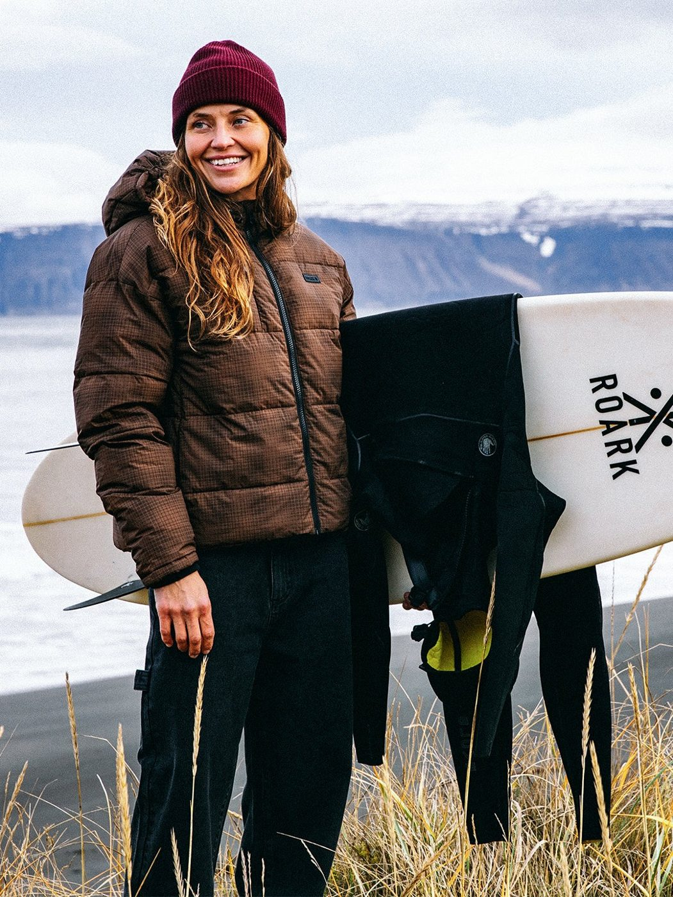
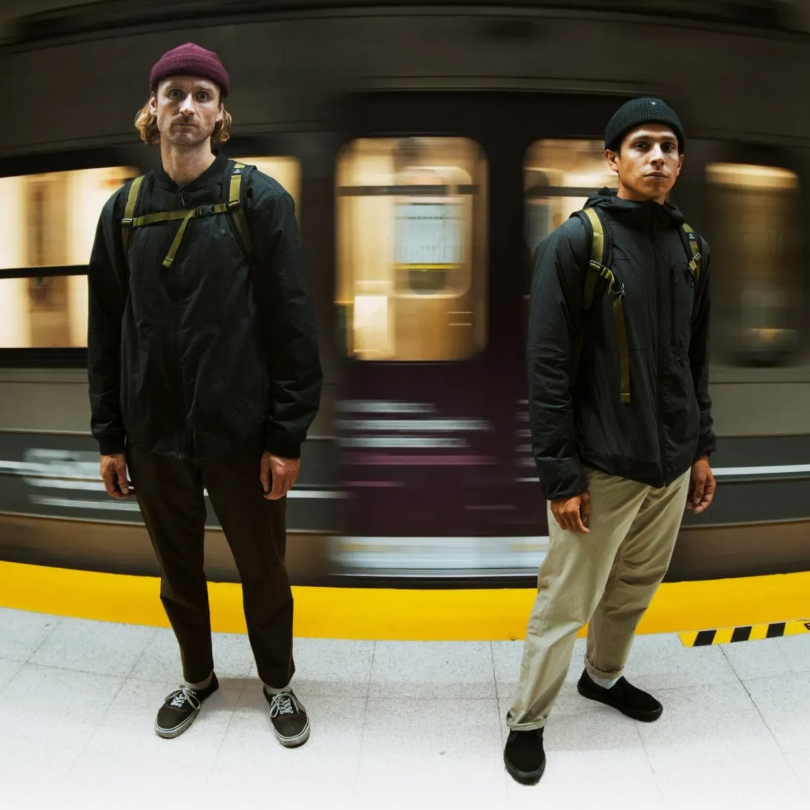
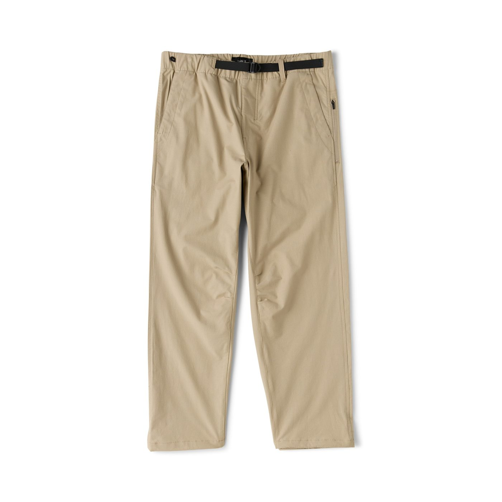
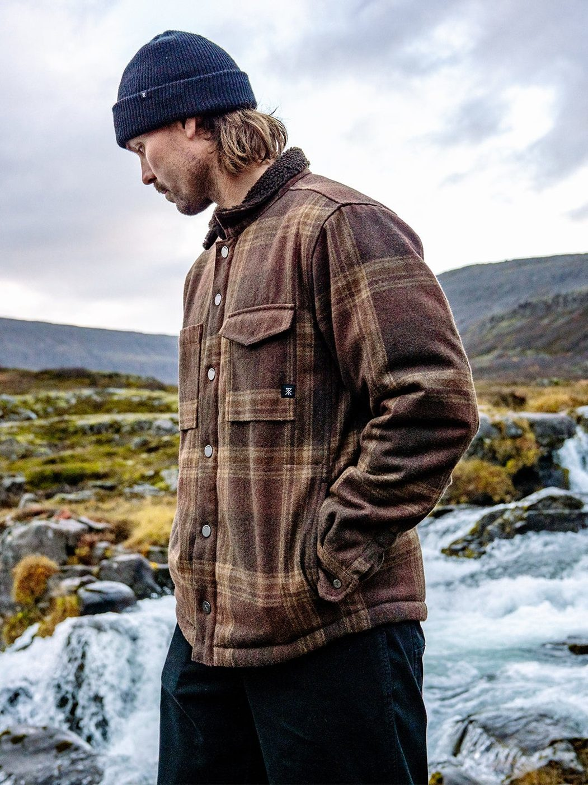
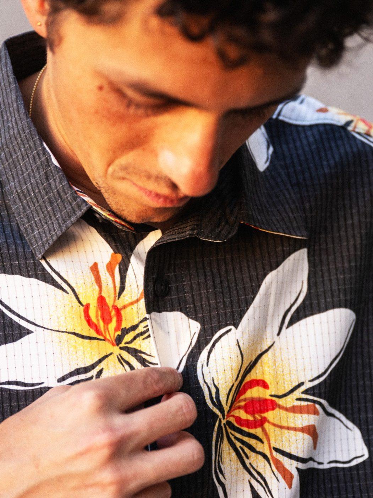
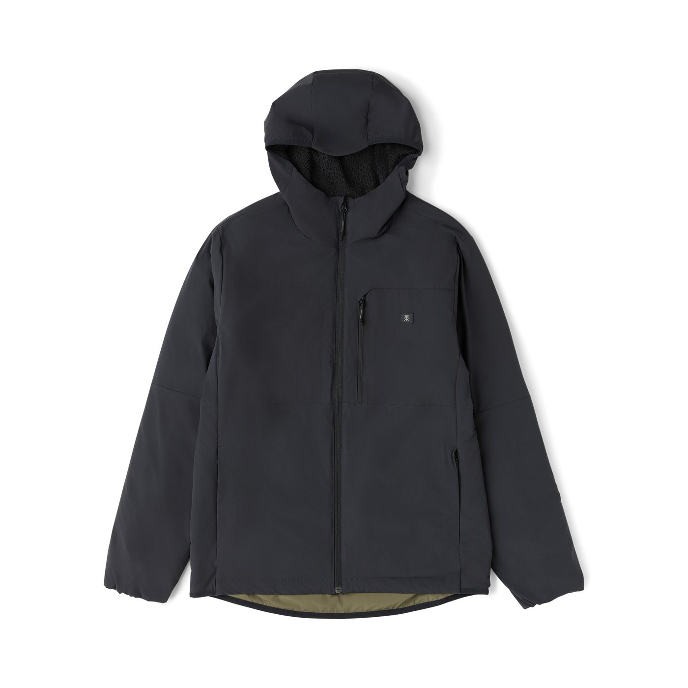
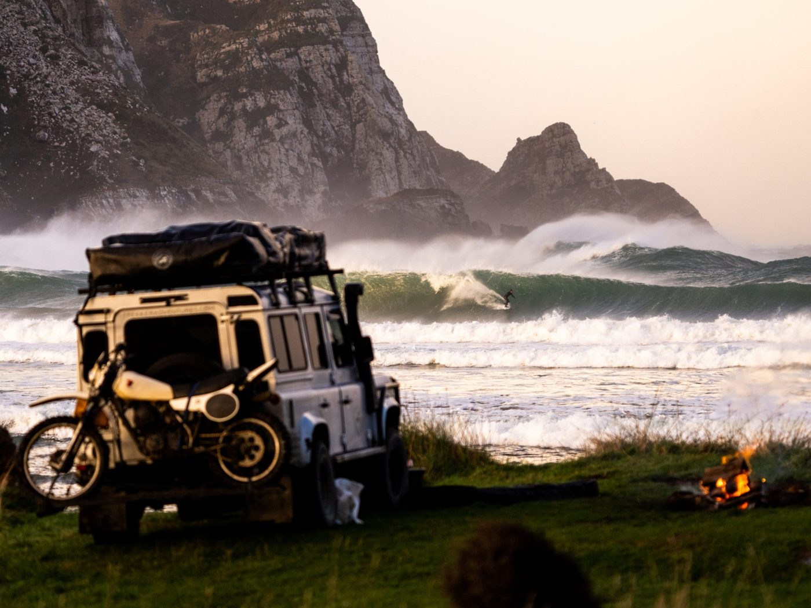

Roark
Company study · 2026-11-20
Roark dresses the road. Layover pants and jackets in black, khaki and stone carry the travel idea, shot on subway platforms, black-sand beaches and mountain rivers. Plaids and puffers in brown and navy add weather, while a large lily print on a woven shirt brings one loud, tropical note. Gear stays plain, and the story is the trip.


(01)

(02)

(03)

(04)

(05)

(06)

(07)Palette · measured from images
#0E0F0E#F3EFEB#716662#463E3E#BFB3AB#A0805BVisual themes
- Travel-ready layers
- Key motifs: belted trail pants, hooded and bomber jackets, zip pockets. Sub motifs: black, khaki and stone basics, flat-lay product shots on white.
- Roads and platforms
- Key motifs: subway platforms, city streets, motion blur, beanies and packs. Sub motifs: fisheye wide angle, direct stare, yellow platform edge.
- Surf, trail and weather
- Key motifs: waterfalls, black-sand beaches, surfboards, overland trucks. Sub motifs: plaid overshirts, puffers, dusk fire.
- Loud print on quiet cloth
- Key motifs: large lily print on a navy woven. Sub motifs: aloha-shirt scale, close crop, hand on the placket.
Color palette
- Asphalt black #0e0f0e
- Jackets, pants, night scenes and rock.
- Cloud white #f3efeb
- Sky, surf foam and the lily petals.
- Slate taupe #716662
- Shadowed stone, wet beach and puffer folds.
- Espresso #463e3e
- Brown puffers and the dark plaid.
- Pale stone #bfb3ab
- Khaki pants and overcast light.
- Camel #a0805b
- Dry grass, trail dirt and warm flannel stripes.
Visual elements
- Photography
- Location campaign shots in natural light with the subject looking away or straight down the lens; products on a white ground, shown flat.
- Type and graphics
- Plain capitals wordmark, bold orange sticker-style labels in seasonal campaigns, and a dark topographic map pattern as a section ground.
- Layout habits
- Home page opens on a full-width travel hero, then tiles by category: jackets, women, flannels, wovens, pants. Navigation reads Men, Women, Run / Active, Journal.
Notable products
- Layover Trail Pants
- Belted travel pants with a side zip pocket.
- Layover hooded jacket
- Soft-shell hood with a fleece lining.
- HWY 128 jeans
- Straight-fit five-pocket jeans in military green.
Method and limits
- Palette basis
- the five photographic board images; k-means in Lab, six clusters kept
- Limits
- Images and text from https://roark.com/ and https://roark.com/pages/about-roark, read 2026-11-20. Colors in photos are lit and edited; fabric colors are not measured samples.
Credits and licenses
(01) Women’s puffer in brown, carried with a surfboard on a black-sand beach. Roark. Brand image, study use. source
(02) Layover series campaign: two travelers on a subway platform, train in motion. Roark. Brand image, study use. source
(03) Layover Trail Pants in beige, belted, with a side zip pocket. Roark. Brand image, study use. source
(04) Brown plaid overshirt and navy beanie beside a waterfall. Roark. Brand image, study use. source
(05) Close-up of a woven shirt with a large white lily print on navy. Roark. Brand image, study use. source
(06) Layover hooded jacket in black with a fleece lining. Roark. Brand image, study use. source
(07) Overland truck and motorbike at a surf break, fire in the foreground. Roark. Brand image, study use. source